What is the best gun?
What gun should I buy?
Short answer; what I would really like everyone to have:
- Apply for a concealed carry permit. This can take months.
- Buy a Kel-Tec PF-9 ($300) for concealed carry.
- Buy a rifle, some magazines, and ammo:
- AK-47 ($390, semi-auto): more maneuverability and capacity, or
- FAL ($1200): more power and range
- Practice. IDPA type matches are good.
I'm working on moving this page into a wiki, which you can edit.
Why do you want a gun?
If you are in a state that requires it, apply for a carry permit now. They can take months to process.
If you are only going to own one gun, this is probably a good place to start, because it is within reach is always far more valuable than what you have left behind.
I HATE double action triggers (DAO, SA/DA, Glock), which are the type
found in most hand guns. They have a much harder and longer trigger
pull, for people who aren't capable of keeping their finger off the
trigger until ready to fire, or remember to flip the safety off to shoot.
Single action triggers (as in the 1911) are much better in every way, as
long as you can keep your finger off the trigger, and practice flipping
the safety off while drawing. I sleep with my 1911 in my hand. I have
never had an Accidental Discharge.
Possibly useful:
www.SmallestGuns.com.
Kimber 1911 Compact, .45ACP, $710
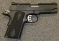 The 1911 was named after the year in which it was adopted as the standard U.S. military sidearm. It is a thoroughly tested and proven design, and fires the very substantial .45ACP round. It also happens to be rather slim, and Compact (4" barrel) or Ultra-Compact (3" barrel) models can be very convenient to wear. It is also a single-action, which means that its trigger pull is much more shorter and lighter, which translates to increased accuracy. The 3 largest manufacturers of 1911s are Kimber, Springfield Armory, and Colt. I've heard nothing good about Colt lately, and Kimber has the most modern machining processes.
"The penetration of the .45 ACP 230-grain FMJ bullet is 26" in ballistic gelatin" - http://www.sightm1911.com/Care/45acp.htm
So use Jacketed Hollow Point ammo, because people are less than 26" thick.
Mine is overly susceptible to limp-wristing.
Kel-Tec PF-9, 9mm, $300
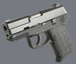 A very compact gun shooting the decent 9mm, for a great price.
Kicks more than an average 9mm due to its light weight.
Kel-Tec P32, .32ACP, $320
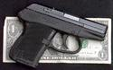 While the Kel-Tec P32 only fires the small .32ACP cartridge, it is extremely concealable. You will basically never have an excuse not to wear it. This makes it a "deep concealment" gun. You can also get a clip that attaches to the frame so you can wear it clipped inside the top of your pants, which looks like it's a folding knife. The extreme compactness of this gun is, in my opinion, the best excuse for a double-action trigger.
Gelatin penetration tests with the P-32 and a bunch of different ammo. Basically: Use FMJ. Because JHP has insufficient penetration. FMJ gives you 14-15" depth of penetration, which is good.
Smith & Wesson Model 60, $560
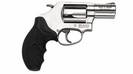Any small frame 5 round .357 or .38 really. Fine rounds, and tiny. A shrouded hammer design makes more sense for concealment, but I cannot stand the way they look.
Although the .38 was found ineffective similarly to the 9mm in the above mentioned FBI shootout. And the .357 has a
lot of kick for such a small gun (which will make you anticipate / flinch, which will decrease your accuracy - practice).
"Blessed are they who, in the face of death, think only about the front sight."
If purchasing a rifle for indoor use, consider shorter barreled options (carbines) for maneuverability. This may reduce long range potential.
Do not buy a Century Arms (based) rifle, they are crap. They make copies of (and receivers for) several of the below rifles (FAL, CETME, M14, AK-47).
I strongly recommend hunting with these in places where it is legal, for practice. Don't pull the trigger until you're confident the first round will kill.
Main Battle Rifles
Short: Buy a (metric) FAL.
If you want a semi-automatic rifle with a more powerful round than the AK / AR / M16, this is the section.
- Full power rifle cartridge.
- Effective range of about 500 yards.
- Gun and ammunition are both larger and heavier than an assault rifle.
- Ammunition: 7.62x51mm NATO / .308 Winchester (more damage, more bulk and weight to carry)
- 20 round detachable magazines.
After WWII, Germany tried to license the FAL from FN and failed
*. They then licensed the CETME from Spain and (HK) developed it into the G3. The HK91 is a semi-auto version of the G3. The PTR 91 is a copy of the HK91 using HK tooling, which may be of better quality than the original. It is a shame that we do not know what would have resulted if HK had started with the FAL instead of the CETME.
FAL, 7.62x51mm NATO / .308, $1200 (2009-10-28), 10.4 lbs + mag
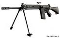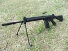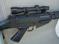 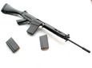 "The right arm of the free world."
The last NATO standard rifle developed under the mistaken belief that a soldier could be expected to be emotionally capable of firing an aimed shot at a human being.
Reliable. Accurate for a semi-auto. Good range. Substantial cartridge.
This is the rifle the US military should have adopted instead of the M14, along with most of NATO, before the (current) M16.
I specifically recommend the
Austrian FAL Carbine from DSArms for quality and price. The longest barrel length is not the most accurate due to "barrel whip". If you want a scope, you'll need a
scope rail, which does not need to be removed for cleaning.
Compared to the M16/AR-15, which is the current standard rifle for the U.S. and NATO military, the FAL:
| + |
Is more reliable. |
| + |
Has greater range. |
| + |
Does more damage per aimed shot. |
| = |
Has equivalent accuracy. |
| - |
Magazine contains 20 rounds instead of 30. |
| - |
Is roughly two pounds heavier. |
| - |
Ammunition is heavier. |
| - |
Ammunition is larger. |
| - |
Ammunition is more expensive. |
There are "metric" FALs and "inch" abominations, with parts incompatibility and minor differences. Metric is probably the safe bet.
It looks like I will be putting a 1-4x scope on mine, using Leupold quick release low rings.
10,000 round FAL torture test
PTR 91, 7.62x51mm NATO / .308, $1,200
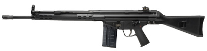
Buy a FAL instead.
- No last round bolt hold open.
- Charging handle too far forward for speedy use.
- Even w/paddle mag release, slow mag changes.
- Difficult to clean thoroughly.
- Heavy as hell.
- Poor cheekweld.
-
FYRARMS
Also, brass is not reloadable due to mangling by the fluted chamber.
Other than that, it is a copy of the HK91, possibly better than the original, a proven battle rifle.
CETME, 7.62x51mm NATO / .308, $520 used (2009-10-28)
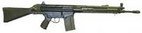 The Spanish design HK started with when creating the G3/HK91. A good price compromise. Make sure you don't get one chambered for 7.62x51mm CETME, which can crack if you use .308 Win. / 7.62NATO in them.
Its fluted chamber damages brass to the extent the brass is not reloadable.
Because it uses roller delayed blowback instead of gas operation, it is possible to float the barrel for increased accuracy.
M14 / Springfield M1A, 7.62x51mm NATO / .308, $1,500
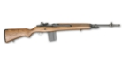 The M14 was the standard U.S. infantry issue Main Battle Rifle before the M16. The Springfield M1A is a copy of it. Comparisons between this an the FAL can be heated. Optics rail options are either partial, not covering the receiver, or require removing a couple bolts to field strip the rifle. Obviously irrelevant if you will only use iron sights.
I am aware of precisely two optics mounts for the M14 that are worth a damn: the ~$150 Leatherwood mount, and the ~$300 Sadlak Industries mount.
Kel Tec RFB, 7.62x51mm NATO / .308, $1,345
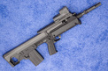
Bull-pup. Ways in which it has been negatively compared to any detachable magazine .308:
- It has not been tested in war.
- Fewer have been made from which you can cannibalize parts.
That's a damn short list.
AR-10, 7.62x51mm NATO / .308, $1400
Never actually issued as a standard infantry rifle.
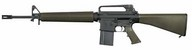 Direct Impingement sucks.
This is a larger caliber version of the AR-15.
There are plenty of optics mounting options, particularly for flat-top rifles.
Assault Rifles, or semi-automatic versions thereof
Short: Buy an AK-47.
- Intermediate cartridge (between rifle and handgun).
- Effective range of about 215 yards.
- Gun and ammunition are both smaller and lighter than a battle rifle.
- Ammunition: 7.62x39mm or 5.56mm NATO (less damage, but it's easier to carry more).
- 30 round detachable magazines.
These are the best examples of military rifles designed to fire larger numbers of intermediate (smaller than most rifles, larger than handgun) cartridges as a result of research which has shown that "...very few troops are mentally prepared to direct aimed fire at the enemy, preferring instead to spray bullets in the general direction of the enemy." - M16 History
An assault rifle is, by definition, fully automatic. I feel the additional price and paperwork are not worth the additional ability to waste ammunition. These models are semi-automatic.
AK-47, 7.62x39, $390 (2009-10-28)
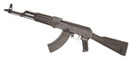 Nothing beats the reliability of the AK-47.
It is one of the most common firearms in the world. It is stereotyped as inaccurate, but this is less true in current models. 30 round detachable magazines are commonly available, and the ammunition is cheap, roughly 25 cents per round in 1,000 round cases. Although milled receivers are more accurate by force of inertia, I would go with a stamped receiver for reduced weight.
I think the biggest flaw of the AK may be the short sight radius, reducing accuracy. This might be an ideal solution.
UltiMAK is a popular optics mount. The best optic for this may be the Aimpoint Micro T-1. 1x (unmagnified) reflex or holographic sights are definitely well suited to the AK, and this one has a battery life of "over 5 years" continuous on, so just leave it on.
Bushmaster AR-15, 5.56mm NATO, $900, 9.78 lbs
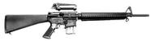 Direct Impingement sucks.
U.S. uses bullets ill-suited for new ways of war.
I would not buy an AR without a full length 20" barrel due to reduced effectiveness with short barrels as discussed in the article above. This significantly reduces the AR's utility.
The semi-automatic version of the M16 Assault Rifle (current U.S. military issue). It is more accurate than the AK-47, but is stereotyped as very unreliable and prone to jamming, but like the AK, modern versions are less prone to the old stereotypical problems. The two biggest names in ARs are Armalite and Colt, but the equivalents from Bushmaster tend to be less expensive. 30 round detachable magazines are commonly available. Many versions of the AR are available. "Match" versions are intended to be as accurate as possible for sport, without regard to the effects on reliability. For this reason I would suggest a standard
no-frills version. I don't mind the U.S. military adopting this minuscule cartridge if soldiers cannot be expected to aim at humans, but the
direct impingement system bothers me.
Best Price
SKS, 7.62x39, $200 used
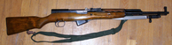 If you want a reliable, war tested combat rifle for the best price, this is a good place to look.
10 round NON-DETACHABLE magazine fed by stripper-clips. Yes this one actually uses "clips". This is the predecessor to the AK-47, and fires the same ammunition.
A long range variation on the previous theme. A very precise bolt action rifle with a good scope. I suggest .308 Winchester caliber, because it is effective and common - also known as 7.62mm NATO, it is one of the major ammunition types used by the U.S. military. Effective range of about 800 yards. It is often recommended that you spend about as much money on your scope as you do on the rifle. Leupold makes good scopes. I recommend a 10x fixed power scope with a mil-dot reticle for range estimation.
Look around for a local shooting range over 300 yards. If they are hard to come by, consider the possibility that you will never have a practical need to make a shot over 300 yards, and consider giving up a little accuracy for capacity and rate of fire, and getting a battle rifle instead.
With a .308 and a flat scope base, your maximum range will be limited by your scope adjustment range. To fix this, and for their quality, I recommend a Badger Ordnance 20MOA canted scope base and rings.
Savage Arms (under $300) is probably a good alternative brand if you don't want to pay for Remington.
Do not get .30-06, it is the same as the more common .308 Winchester with a shorter case due to modern powders.
Longer range: To take .308 Winchester up to 1,000 yards, you'll need a canted scope base, and 175 grain bullets - the limit is the point at which it drops back down through the sound barrier. If your need to go farther justifies increased cost, and recoil, and its corresponding increased time between shots, .300 Winchester Magnum is good, and then .338 Lapua above that.
Remington 700P, $870
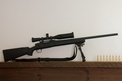 Previously known as the Remington Police Sniper Special - it is one of the most accurate out of the box rifles in a reasonable price range. It is known to do less than 1" diameter groups at 100 yards without modification.
Remington 700 SPS Varmint, $540
Largely the same as the 700P with a cheap stock.
No anti-material rifle has ever been used in a crime.
This stuff will break trucks at a mile. .50BMG is the standard round. The rifles are really big. Bolt-actions are, once again, most accurate. You'll want a rugged scope for it, as the recoil is extreme.
The .416 Barret round was designed in 2005 as a replacement for the .50BMG in rifles. The .50BMG was never designed for long range accuracy, it was designed for the Browning Machine Gun.
Serbu .50BFG, .50BMG, $2200
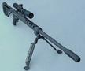 The Serbu .50BFG is an accurate, well designed, attractive bolt-action .50BMG rifle. I believe it is the least expensive .50BMG rifle. I'd love one.
It is very useful to have a .22LR pistol for target practice, since the ammunition is extremely cheap. Select a semi-auto or revolver to match the most common handgun(s) you use for other purposes.
Sig Trailside Target, .22LR, $600
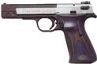 Designed by a major company known to make exceptional competition .22LR pistols to be sold in the more common plinker price range, it has exceptional accuracy for its price.
Browning Buckmark, .22LR, $400
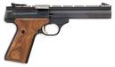 Another common quality choice.
Ruger Mark II, .22LR, $300
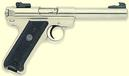 Probably the most common choice, but a pain to clean and assemble.
Henry AR-7
This is an extremely packable .22LR rifle, if you'd like something with a little more utility.
Pick something from the Liberty section.
At short ranges, and not against body armor, nothing* is more devastating than 12 gauge 00 buckshot. If you can guarantee these two conditions, and that you will need no more than 9 shots, go with a shotgun. Since I cannot, I prefer an AK-47 or an AR-15.
(* There are obviously impractical exceptions. 10 gauge shotgun. 40mm grenade launcher.)
An intermediate cartridge rifle carries 30 rounds, can quickly be reloaded, a carbine (short barrel) is at least as maneuverable indoors as a shotgun, and is far more versatile due to greatly extended effective range.
Shotguns generally max out at 8+1 rounds. Reloading is slow. "...the maximum effective range on a man size target with the 12ga buckshot is 18yds." - Shotgun Ammunition Assessment (mirror). If you use a shotgun, use 00 buckshot. What won't go through walls won't drop badguys.
Pump shotguns have the nice advantage that you can quickly load any type of ammo you want for your next shot. Receiver saddles are a good way to carry more. The best penetration I've been able to find is Brenneke Special Forces Short Magnum, and Green Lightning Heavy Field Short Magnum, which appear to be identical.
The most interesting apparently unavailable shotgun rounds are Sauvestre slugs.
Glock 9mm with a 33 round magazine
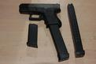 If you have nothing but paper walls between you and your closest neighbors, then you will probably want to consider over-penetration. In this case I would probably go with an extremely high capacity handgun with hollow points, like a Glock 9mm with a pair of 33 round magazines. If it's a compact, that Glock with its standard magazine can double for concealed carry. A very versatile option, but useless against an attacker's
soft body armor.
Saiga-12, AK pattern 12 gauge shotgun
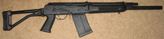 If you're going to get a shotgun, the Saiga-12 AK pattern 12 gauge with a couple 10 round detachable box magazines is a nice option. There are also
20 round drum magazines for $100. There can be problems with the top round in a magazine pressing against a closed bolt deforming over time, resulting in feeding problems, at least with some ammunition. You can use a notched safety to hold the bolt back, or possibly find less squishy cartridges.
Mossberg 590 model #50665, 8 round magazine, $400
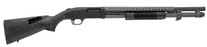 Mossberg 590, with an 8 round magazine, the highest capacity you'll find in a pump.
There is also the military version, the 590A1, with a heavier barrel, aluminum trigger guard and safety, but it is not compatible with the barrel shroud.
Hunting Shotgun Note
Some places do not allow you to hunt with any firearm other than
a shotgun. If this is the case for you, you might want to purchase
a shotgun with a pair of interchangeable barrels, and add a
magazine extension.
Remington (870) makes factory extension tubes, and the barrels are easy to swap.
Mossberg (500) makes interchangeable barrel sets but no mag extension are available to improve their 4+1 capacity.
A long (~26-28") barrel with a choke is needed for hunting for tighter shot groups and longer range.
A short (18-20") barrel with no choke (aka cylinder choke) is much more optimal for home defense due to greater maneuverability and wider shot groups.
The Remington 870 model 25571 plus a 3 round 20" barrel mag extension could be optimal. It includes 20" (no choke) and 28" (choke) barrels. Extension improves capacity from 4+1 to 7+1.
Compared to an intermediate cartridge rifle or shotgun, handguns have an advantage in maneuverability and concealability. As mentioned above, there are some with 33 round magazines.
Para-Ordnance P14.45, .45ACP, $810
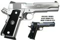 The Para-Ordnance P14.45 is a variant of the 1911. It uses the formidable .45ACP cartridge, and has a capacity of 14+1 rounds.
Smith & Wesson Model 627, .357, $1000
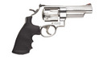I cannot recommend a revolver for home defense. Even the 8 round .357s have insufficient capacity, and even with reloaders and practice I would expect them to take too long to reload, compared to a high capacity semi-auto.
You would be amazed how quickly six rounds goes away under pressure.
If you're going to get a revolver for home defense, go with an 8 round .357, get reloaders, and practice reloading. .44 magnum recoil takes too long to re-acquire your target, and the additional power is of no benefit (except the extremely rare case of some body armor). .357 Magnum has plenty excessive over-penetration and recoil.
Desert Eagle .50, .50AE, $1210
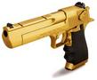 This had to be listed, primarily to say what it is not. It is not the best of anything practical (in .357 magnum, .44 magnum, or .50 action express).
It is not the best carry gun. It is far to big to reasonably carry. It holds the most rounds in .357, only 9. The Para-Ordnance P14 holds 55% more, of similarly powerful rounds. In .44 mag. it holds 8. In .50AE it only holds 7. .357 is appropriate to take out an attacker, the rest are overkill, and just less magazine capacity.
It is not the best home defense gun. Its ammunition is all significantly less effective at indoor ranges against attackers than a 12ga shotgun, including less area of effect.
It is not the best gun for use in multiple areas, because it's not well suited to any of them. For this, go look in the self or home defense sections.
So what is it? A hell of a conversation piece. It's the biggest pistol you can get. There are reasons it's popular in movies. If you do get one, go all the way and get it chambered in .50AE. Oh yeah, and it has a fascinating gas blowback system, more common in rifles.
Body armor is rarely used in crimes, but it does happen. Unlike .50BMG rifles being used in crime.
All center fire rifle cartridges will penetrate all soft body armor. Some body armor has hard plates to stop a rifle round. One rifle round. One over the heart in the front, sometimes one on the back.
Clear face shields are not armor, and will not stop any bullet otherwise suited to self defense.
Shotguns will not penetrate body armor, but 12 gauge buckshot or a slug at close range is not likely to leave anyone standing, or with all bones intact.
Legs, arms, hands, and feet are almost never protected.
Some armor can be clearly seen to cover the groin. Among other reasons, very major arteries pass through there.
I am fond of the .308 Winchester / 7.62mm NATO cartridge largely because of how common it is. If that were not relevant, I suspect I would go with .243 Winchester.
{kind=link}
{kind=link}
{kind=link}